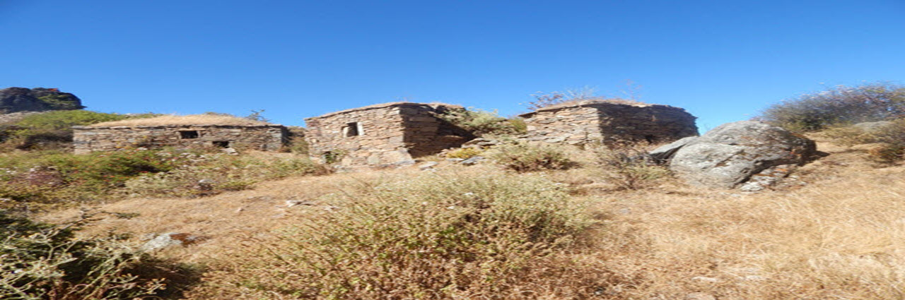

Toqpa iglesia

Set 30, 2019
El proceso histórico de Cochapetí tiene sus cimientos en épocas remotas, cuando grupos humanos procedentes del litoral costeño, durante el período formativo, se establecieron en la quebrada y posteriormente recibieron influencia de la cultura Recuay. Como la Iglesia Toqpa